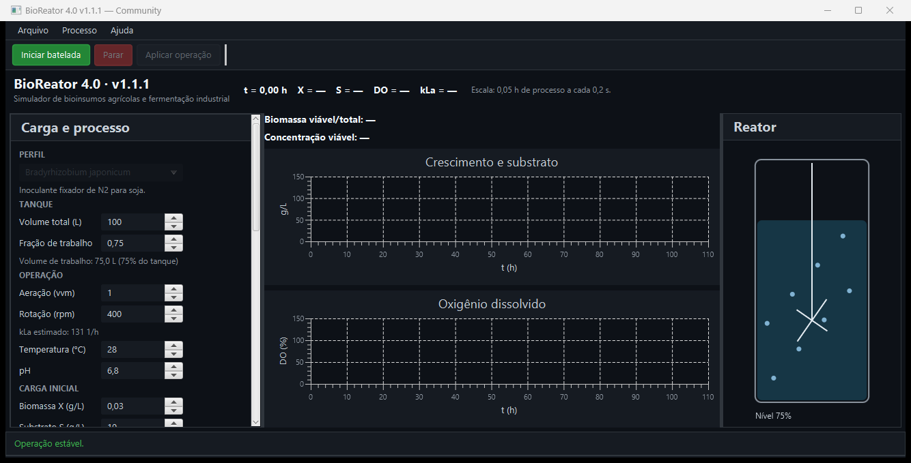
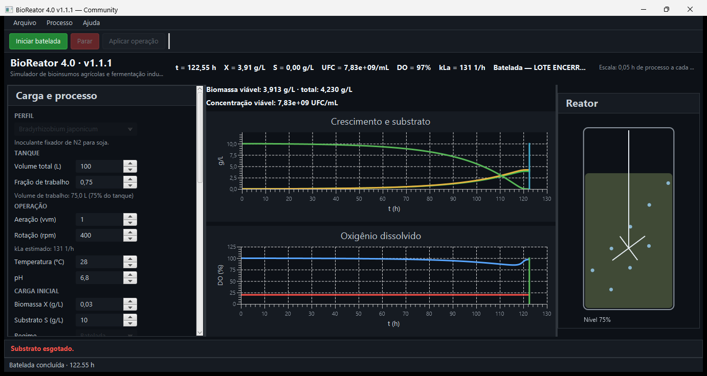

Simulador desktop para estudo de bioprocessos baseado em modelos matemáticos, destinado ao aprendizado, a testes de cenários e à análise didática. A Community 1.1.1 está publicada para Windows.
Aplicativo desktop para Windows x64, com Java 25 incluído. A interface usa JavaFX e o histórico local usa SQLite.
| Recurso | Community 1.1.1 | Premium |
|---|---|---|
| Simulação de batelada | Disponível | Escopo em definição |
| CSV e histórico local | Disponível | Escopo em definição |
| Recursos adicionais | Não incluídos | Planejados; ainda não disponíveis |
A edição Premium está planejada para 18/06/2027. Data, escopo e condições podem mudar; não está disponível na release atual.
Estudantes, professores e pessoas interessadas em aprender sobre bioprocessos por meio de simulações e análise de cenários.
O substrato sustenta o crescimento calculado; oxigênio, pH, temperatura e fase lag modulam a cinética configurada. O modelo também representa decaimento celular.
Consulte o manual do operador para instruções completas e a página de download para requisitos, tamanhos e hashes.
A aplicação roda localmente no Windows. O painel reúne condições da carga e variáveis calculadas; os gráficos acompanham a trajetória simulada e marcam o motivo do término.


O SQLite guarda o histórico no computador, mas esta edição não tem uma tela de consulta/listagem de lotes. Consulte a nota de privacidade e localização dos dados.
O pacote inclui Java 25 e não possui assinatura digital. Veja os formatos disponíveis na release oficial. Requisitos, tamanhos e hashes estão na página de download.